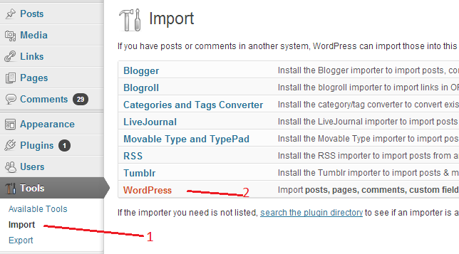
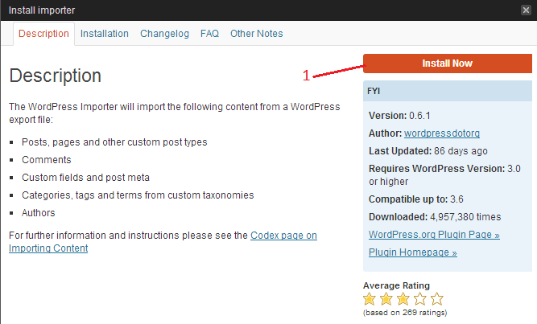
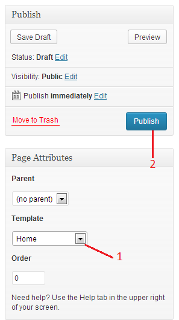
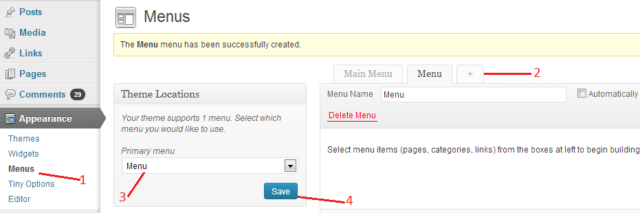
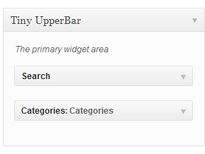
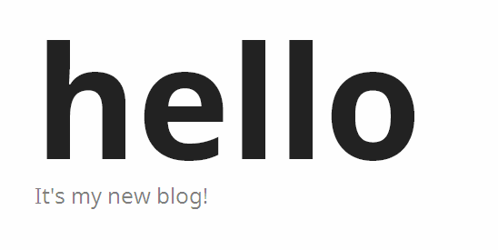

“TinyPress Theme” Documentation by “Caslay Family” v1.0
“TinyPress”
Table of Contents
- TinyPress Introduction!
- Basic Installation
- Importing The Demo Data
- Setting up Homepage
- Setting Up Contact page
- Menu
- Widgets
- Theme Options
- Shortcodes
- Conclusion
TinyPress Introduction - top
TinyPress is a responsive, clean and user friendly blogging WordPress theme which is built with flat and minimal design.
When we decided to start building TinyPress theme, we put in our consideration the present and future of user-friendly interfaces.
TinyPress Theme features are as follow:
- Cross Browsers Compitability
- Validated Through W3 Validator
- Search Engine Friendly
- Shortcodes for enhancing content looking
- Very quick loading time
- Well commented code to make it easier for developer to add their touch
- 5 different styles
- Extra fonts
- Mobile Friendly
Basic Installation - top
TinyPress Theme installation is pretty straight forward, you only need to follow any WordPress basic theme installation, and if you have no idea how to do this, let me guide you
- You can directly use wordpress admin panel to do this by going to Appearance-->Themes-->Install Themes-->upload then choose TinyPress_theme.zip file which is located on your computer and install
- If your host refuses to do this due to any inconveniences you can login to your ftp account and navigate to your WordPress installation folder and go to wp-content/themes/ and unzip the zipped file into this directory
- Then you go to Appearance-->Themes and activate TinyPress Theme
- TinyPress Theme requires wp-pagenavi plugin to be installed, you will get a notification stating that after theme installation
- That's it! You can now start blogging using TinyPress Theme, but you may follow the other instructions to make the theme look just perfect!

Importing The Demo Data - top
We have put in mind that you may not have enough time to make everything yourself, so we have made a demo content that you will only edit its text and go live quickly.
- You will find a file among your theme zipped file a folder named "Demo Content" that contains demo_content.xml file
- Go to your WordPress admin panel then navigate to Tools-->Import then choose WordPress. 
- It will require you to install a plugin called WordPress Importer, just go a head and bring it on. 
- You click then Activate Plugin and go to importer
- You choose Demo.xml file we mentioned above and then click on upload and import
- Finally, you assign an author to posts and pages, and choose if you want to download demo images and files or not.


Setting up Homepage - top
Home Page is TinyPress’s most important page, it has everything users want with a few magic clicks.
- Go to pages and choose to create a new page.
- From page editor on the right side you will be allowed to choose a template for this page, you will need to choose Home, then click on publish 
- Now you should navigate to Settings-->Reading and Choose Home for Front page and leave the second option as it is.
- Now all of your posts will exactly in the place it should be


Setting Up Contact page - top
Contact page setup is almost like making the Home Page
- Navigate to pages and create a new page, for template on left pane choose contact
- Type your desired content for the contact page and click on publish
- Now you go to Appearance-->TinyPress Options and type the email you want to receive emails from then click Save, contact page uses the email you used while WordPress installation if you want to change it just change it from WordPress settings
Menu - top
The next step is going to be with website menu, setting up WordPress menu is easy and simple.
- Navigate to Appearance-->Menus then create a new menu and place your desired menu items on it
- On the left upper corner you will see the Theme Locations box and an input with the name Primary menu. Assign the menu you just created to it
- Click save and you will be able to view the menu on your website 
Widgets - top
In TinyPress Theme we have places Widgets in a different place, we actually have placed all navigation items in Website header:
- Navigate to Appearance-->Widgets
- In the right corner, you will see a box called TinyPress UpperBar
- Drag and drop the widgets you want in that box and it will show right away in your Website. 
Theme Options - top
We haven't made any unnecessary options, just the ones that really matters for you
- Navigate to Appearance-->TinyPress Options
- You will be able to see TinyPress Options which are all straightforward, I'll just explain explain options 1 & 2
- Option 1 & 2 are going to be the title and description placed in website head, you can use it to say a welcome message or introduce yourself to the world 
Shortcodes - top
Shortcodes are the most important part in our theme as it gives the content a better look and feel, there's 8 shortcodes in TinyPress theme:
- First, go to WordPress editor by adding a new page or post
- in your editor you will see the following icons, I'm going to demonstrtae each one of them by order from left to right
- The 1st icon is to place a YouTube video, in the id all you need to do is inserting your video id you may leave other calues like width and height as it's to make it viewable on all devices
- The 2nd and the 3rd icons are done the same way you have done YouTube video
- The 4th icon is to add a button in your post, in class you choose button size for example class="big or small", link and target in target field you can leave it blank if you want the link to open in the same page or target="_blank" if you want it to open in a new tab
- The 5th icon is to insert a dropcap Letter in the beginning of your post
- The 6th icon is used to add toggle option or accordion, if you want it accordion, you just type accordion on type or leave blank if not, then you insert your list of toggles inside it like this [toggles type="accordion"][toggle title="1-title"]content[/toggle][toggle title="2-title"]content[/toggle][/toggle]
- 7th icon is to add an image with rounded or bordered style, if you want the image to align right, left or center type align="right", in some cases you may want to add image next to paragraph in this case you type float="right, left ot center", you will be also allowed to add image caption
- You can sperate between content using [linebreak /] shortcode
- The last icon is used to insert a paragrapgh between quotes which is very simple
Conclusion - top
I hope I have guided you clearly in this documentation, if you have any further question just use Caslay.com contact form or drop us an email on family@caslay.com